Let's make the program that greets the user. We will ask the user for his or her name, and then say 'hello'. We use the gets method to get the user input (as a string).
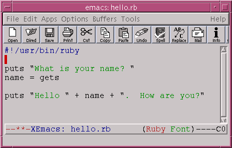Save this and run it:
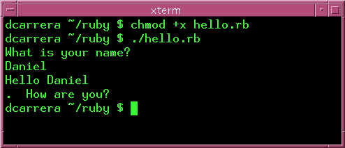What happened? Why did it go to the next line?
It went to the next line because you typed a new-line character. That is, because you pressed Enter.
This will make more sense if we bo back to irb. Start irb and type the gets line. When the computer waits for the input type in a name. Look carefully at what happens:
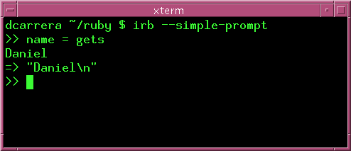What's that "\n" at the end of the string?
That "\n" represents a new-line character. This is the character that your keyboard sends when you press the Enter key.
| Tip: See how we used irb to figure out what was happening? Whenever something doesn't go the way you expect, it is a good idea to try it out in irb. |
Okay, we know what's wrong. But how do we get rid of that pesky new-line?
Ruby strings come with the method String#chomp for precisely this purpose. Let's go back to irb so we can see it in action.
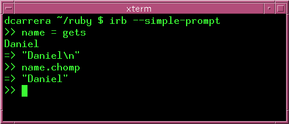Beautiful! The String#chomp method gives you back the string, but without the terminating newline. So now we can write:
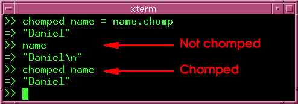Notice that name still contains the new-line. It's chomped_name we want. But why have another variable? It's better to just write:
>> name = name.chomp
Now name has the new-line removed.
Now we can go back to our program and fix the problem.
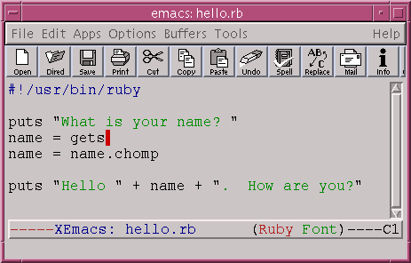Now, here is a neat thing about Ruby:
Therefore, you can write gets.chomp to make String#chomp be called on whatever gets returns. In other words, we can write:
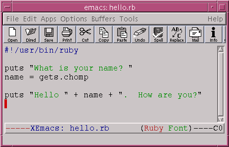Now, isn't that beautiful? Type this in and run it:
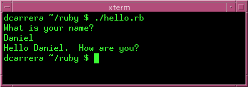Write a program that will take two words and print them in opposite order.
Write a program that behaves like this:
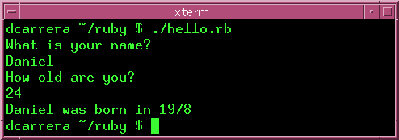Assume that the year the user was born is simply the current year minus the age. Remember String#to_i
Write a program that asks for a number and a sentence and prints the sentence backwards that many times. It should:
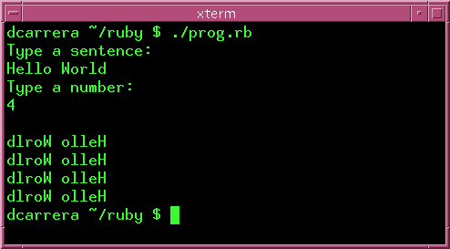There is more than one way to make this program. Use any you like.
What do you think this line does?:
number = gets.chomp.to_i
Try it out in irb.
Write a factorial program, which takes a number from the user and computes the factorial. It should behave similar to this:
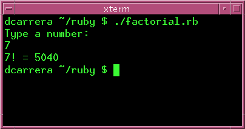